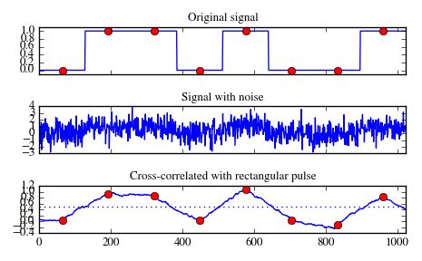

scipy.signal.correlate¶
- scipy.signal.correlate(in1, in2, mode='full')[source]¶
Cross-correlate two N-dimensional arrays.
Cross-correlate in1 and in2, with the output size determined by the mode argument.
Parameters: in1 : array_like
First input.
in2 : array_like
Second input. Should have the same number of dimensions as in1; if sizes of in1 and in2 are not equal then in1 has to be the larger array.
mode : str {‘full’, ‘valid’, ‘same’}, optional
A string indicating the size of the output:
- full
The output is the full discrete linear cross-correlation of the inputs. (Default)
- valid
The output consists only of those elements that do not rely on the zero-padding.
- same
The output is the same size as in1, centered with respect to the ‘full’ output.
Returns: correlate : array
An N-dimensional array containing a subset of the discrete linear cross-correlation of in1 with in2.
Notes
The correlation z of two d-dimensional arrays x and y is defined as:
- z[...,k,...] = sum[..., i_l, ...]
- x[..., i_l,...] * conj(y[..., i_l + k,...])
Examples
Implement a matched filter using cross-correlation, to recover a signal that has passed through a noisy channel.
>>> from scipy import signal >>> sig = np.repeat([0., 1., 1., 0., 1., 0., 0., 1.], 128) >>> sig_noise = sig + np.random.randn(len(sig)) >>> corr = signal.correlate(sig_noise, np.ones(128), mode='same') / 128
>>> import matplotlib.pyplot as plt >>> clock = np.arange(64, len(sig), 128) >>> fig, (ax_orig, ax_noise, ax_corr) = plt.subplots(3, 1, sharex=True) >>> ax_orig.plot(sig) >>> ax_orig.plot(clock, sig[clock], 'ro') >>> ax_orig.set_title('Original signal') >>> ax_noise.plot(sig_noise) >>> ax_noise.set_title('Signal with noise') >>> ax_corr.plot(corr) >>> ax_corr.plot(clock, corr[clock], 'ro') >>> ax_corr.axhline(0.5, ls=':') >>> ax_corr.set_title('Cross-correlated with rectangular pulse') >>> ax_orig.margins(0, 0.1) >>> fig.tight_layout() >>> fig.show()
